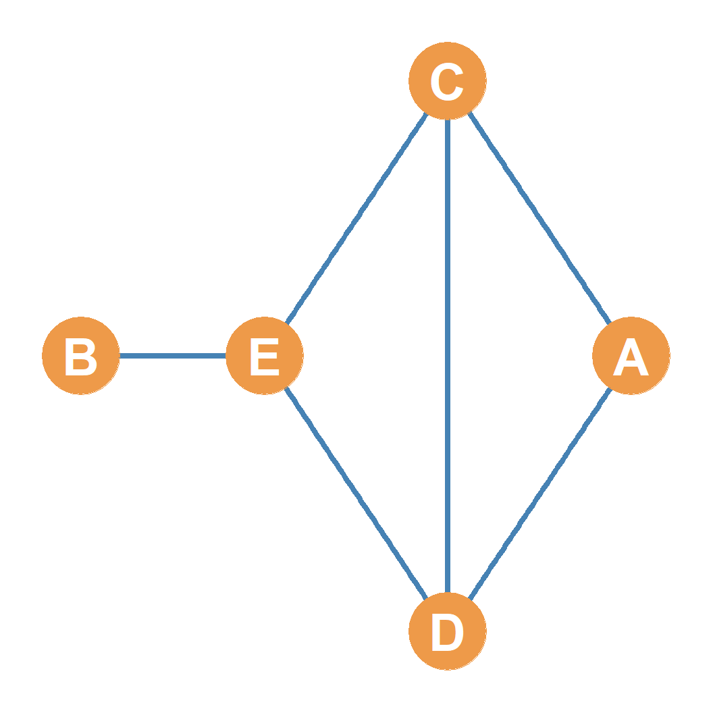
Graph Theory: Paths & Connectivity
The Basics of Social Network Analysis
Part 1: Indirect Connections & Paths
Adjacency vs. Indirect Connections
- Adjacency captures direct connections between nodes:
- If \(A\) is adjacent to \(B\), they share an edge.
- But many network processes operate indirectly:
- We must look beyond immediate contacts to the “friends of our friends.”
- Diffusion Channels: Indirect connections act as channels for gossip, information transmission, disease contagion, or social influence.
- In graph theory, indirect connections are formalized using three core concepts:
- Path, Connectivity, and Reachability.
What is a Path?
- A path between \(u\) and \(v\) is an alternating sequence of nodes and edges that:
- Begins with an origin node (\(u\)).
- Ends with a destination node (\(v\)).
- Does not repeat any nodes (which implies edges are not repeated either!).
- Anatomy of a Path (e.g. Red path from \(B\) to \(D\) on the right):
- Written as: \(B-D = \{BE, ED\}\) (length \(l = 2\)).
- Origin: \(B\), Destination: \(D\) (together called the end nodes).
- Inner Nodes: \(E\) (the nodes in between).
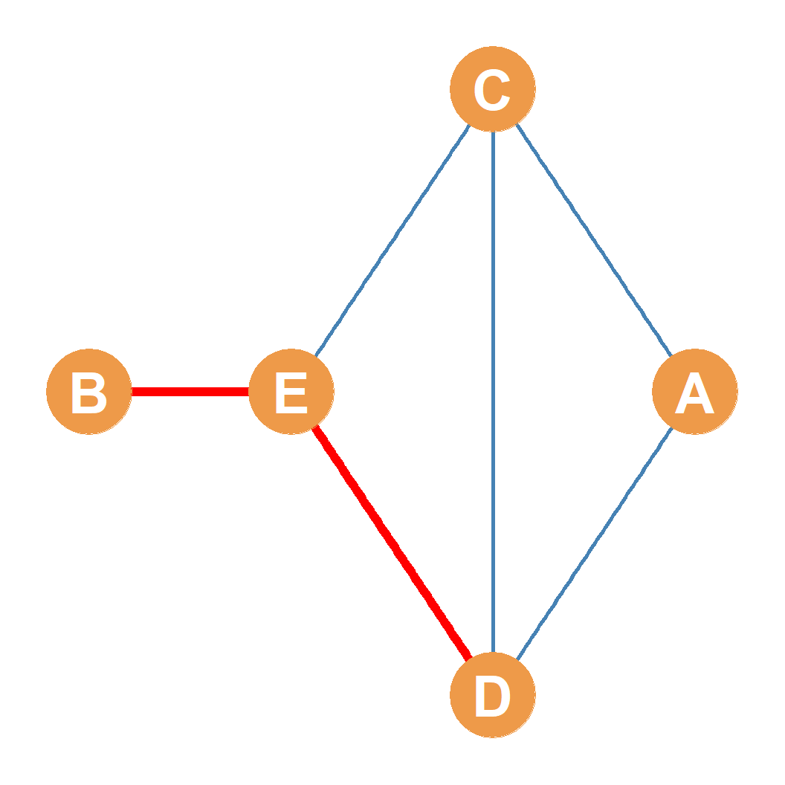
Multiple Paths & Geodesics
- Multiple distinct paths can connect the same pair of nodes.
- Let’s trace paths from \(B\) to \(A\):
- \(P_1 = \{BE, ED, DA\} \quad (l = 3)\)
- \(P_2 = \{BE, EC, CA\} \quad (l = 3)\)
- \(P_3 = \{BE, ED, DC, CA\} \quad (l = 4)\)
- \(P_4 = \{BE, EC, CD, DA\} \quad (l = 4)\)
- Shortest Path (Geodesic):
- The path of minimum length between two nodes.
- Geodesic Distance: The length of the geodesic path (here, geodesic distance \(d(B, A) = 3\), with tied geodesics \(P_1\) and \(P_2\)).
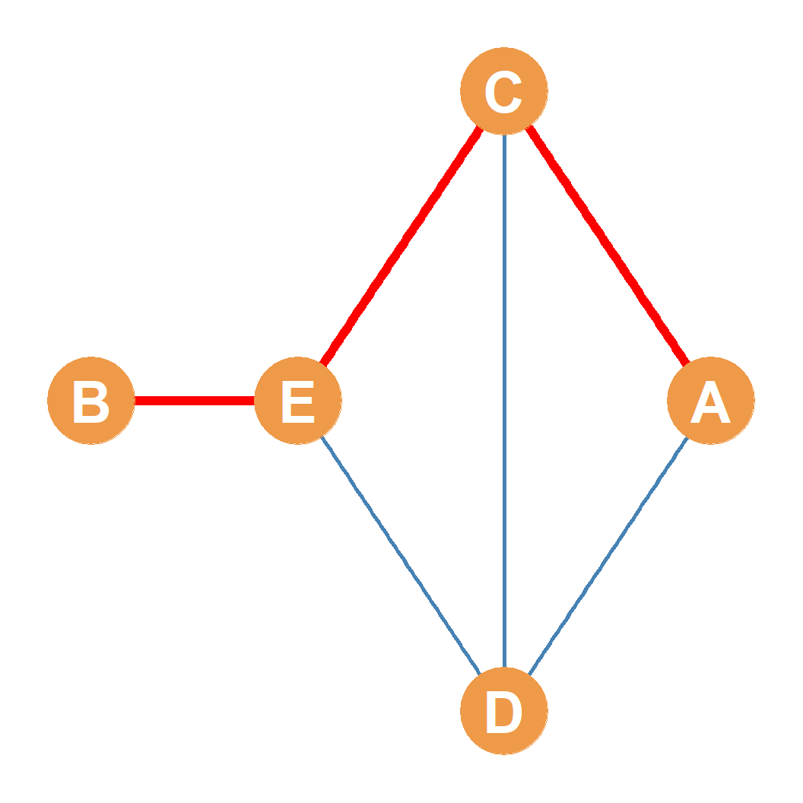
Multiple Shortest Paths (Geodesic Ties)
- In real networks, geodesic distances are often tied:
- There can be multiple distinct shortest paths of equal minimum length connecting the exact same pair of nodes.
- Example: Shortest paths from \(B\) to \(A\) in our undirected graph:
- Both paths have a geodesic distance of \(d(B, A) = 3\).
- Geodesic Path 1: \(B \rightarrow E \rightarrow D \rightarrow A\) (Top)
- Let’s visualize this path highlighted in red on the right.
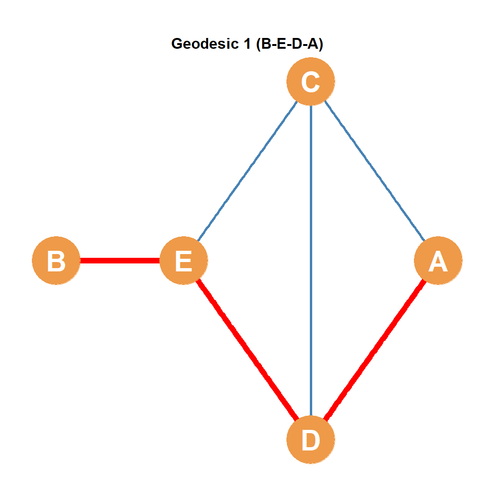
Geodesic Ties: Redundancy & Reliability
- Let’s look at the second geodesic path from \(B\) to \(A\):
- Geodesic Path 2: \(B \rightarrow E \rightarrow C \rightarrow A\) (Bottom)
- Let’s visualize this path highlighted in red on the right.
- Redundancy and Reliability:
- Having multiple geodesics of equal minimum length provides alternative routes of maximum efficiency.
- Structural Robustness: If a node or edge on one path fails (e.g. node \(D\)), communication is completely unaffected because Path 2 remains open!
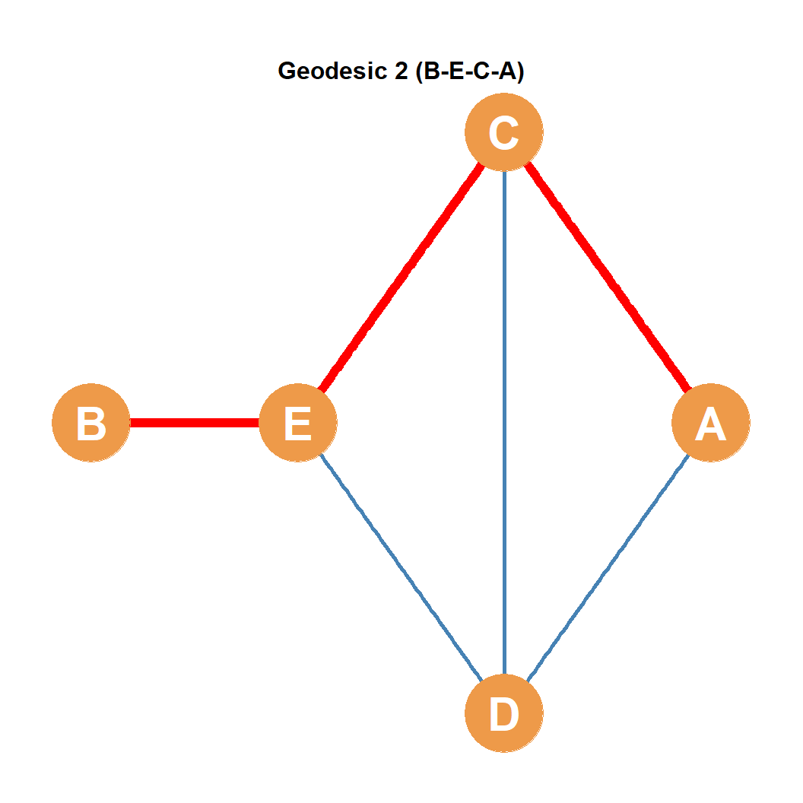
Sociological Significance of Geodesics
- Why do social scientists care so much about shortest paths (geodesics) in real networks?
- 1. Speed and Bandwidth of Transmission:
- Information, trust, and influence decay as they travel along long paths.
- Geodesic paths represent the channels through which diffusion (of gossip, innovation, or virus) happens fastest and with least loss.
- 2. Power, Brokerage, and Betweenness:
- Actors who lie on the geodesics of many other pairs of nodes in the network play a major role as information brokers or gatekeepers.
- They control information flow, filter messages, and can extract rents or gain social influence (this is the basis of Betweenness Centrality).
- 3. Search and the “Small World” Phenomenon:
- Stanley Milgram’s classic “six degrees of separation” experiment showed that human social networks have surprisingly short geodesic distances.
- Even in massive networks of millions of people, any two individuals are connected by incredibly short paths of friendship!
Node Eccentricity
- Definition: The eccentricity of a node is the maximum geodesic distance from that node to any other node in the network.
- It measures the “worst-case” distance to reach any other actor.
- Example 1: Node E (Central Hub):
- Distances from \(E\): \(d(E, B) = 1\), \(d(E, C) = 1\), \(d(E, D) = 1\), \(d(E, A) = 2\).
- The maximum distance is \(2\) (to node \(A\)).
- Eccentricity of \(E\) = 2.
- Example 2: Node B (Peripheral Leaf):
- Distances from \(B\): \(d(B, E) = 1\), \(d(B, C) = 2\), \(d(B, D) = 2\), \(d(B, A) = 3\).
- The maximum distance is \(3\) (to node \(A\)).
- Eccentricity of \(B\) = 3.
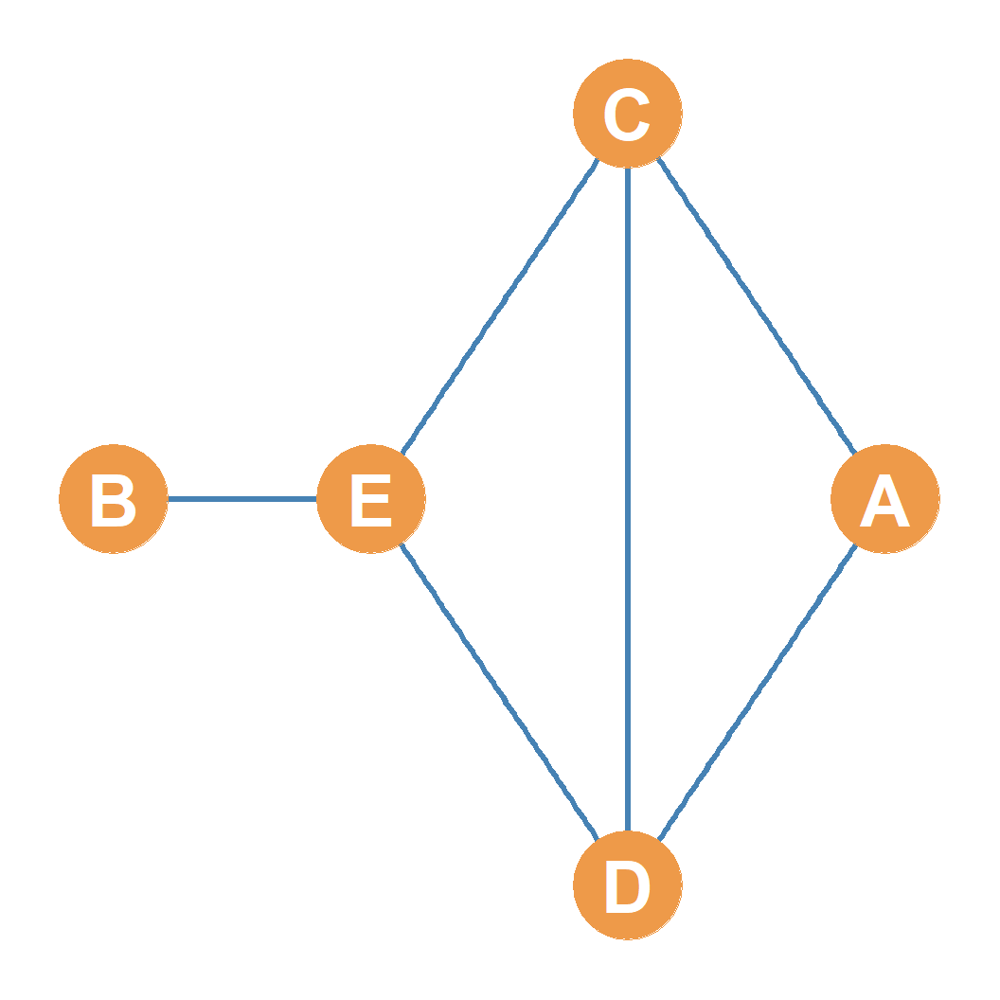
What is a Cycle?
- A cycle is a path of length 3 or larger that starts and ends on the same node.
- Key Concepts:
- Origin and destination are identical (the same vertex).
- All inner nodes and all edges must be completely unique.
- Cycles are the fundamental building blocks of network redundancy and feedback loops.

Visualizing a Simple Cycle
- Let’s look at a simple cycle highlighted in our graph:
- Cycle: \(C \rightarrow D \rightarrow A \rightarrow C\).
- It has a length of 3 (consisting of 3 edges).
- Verification of Properties:
- Origin and destination are identical (both are node \(C\)).
- All intermediate nodes (\(D\), \(A\)) are unique.
- All traversed edges are unique.
- This closed loop creates a fundamental feedback pathway.

Graph Girth
- Definition: The girth of a graph is the length of its shortest cycle.
- Properties:
- If a graph contains no cycles at all (like a tree graph), its girth is defined as infinity (\(\infty\)).
- For our 5-node undirected graph on the right, the shortest cycle is the triangle: \[E \rightarrow D \rightarrow C \rightarrow E\]
- Thus, the girth of this graph is 3.
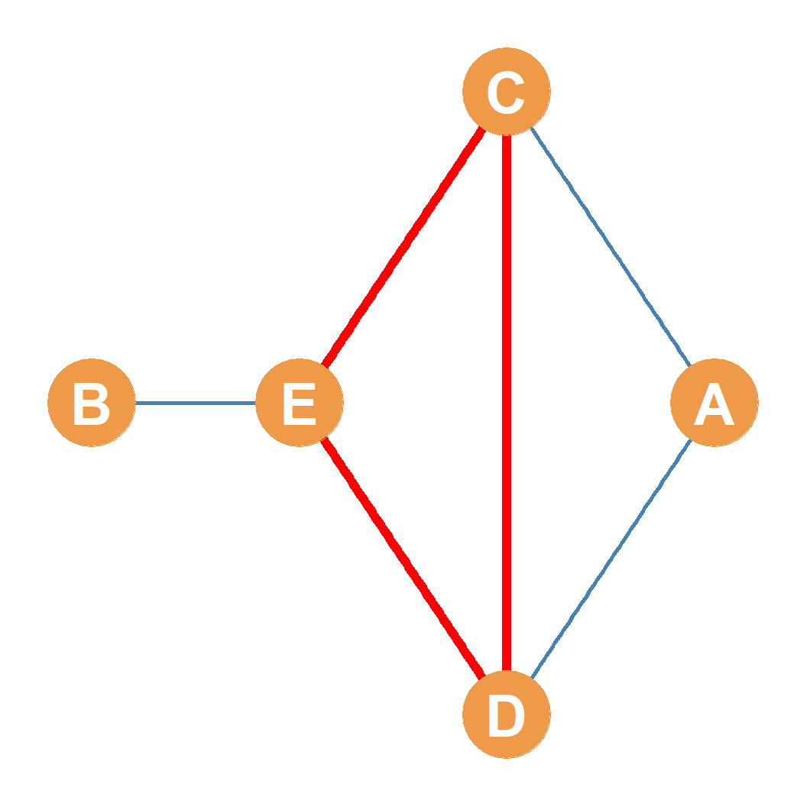
Graph Circumference
- Definition: The circumference of a graph is the length of its longest cycle.
- Properties:
- If a graph is acyclic, its circumference is defined as zero or undefined.
- For our 5-node undirected graph on the right, the longest cycle is the four-loop: \[E \rightarrow D \rightarrow A \rightarrow C \rightarrow E\]
- Thus, the circumference of this graph is 4.
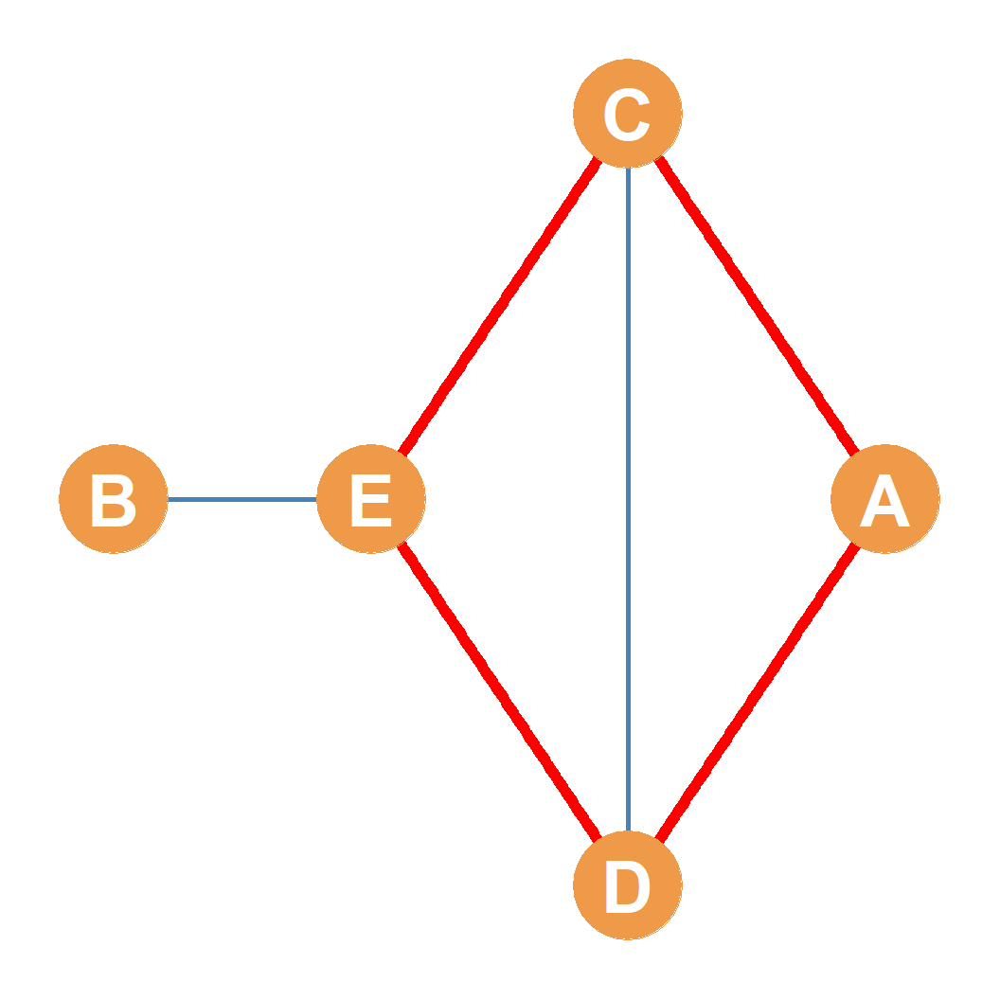
Special Paths: Hamiltonian Paths
- Hamiltonian Path: A path that visits every single node in the graph exactly once.
- Our Example Graph: Shown on the right, it has 5 nodes \(\{A, B, C, D, E\}\).
- A Hamiltonian Path: Let’s trace one in red: \[A \rightarrow B \rightarrow C \rightarrow D \rightarrow E\]
- Every node is visited exactly once.
- The diagonal edge \(B-E\) remains untraversed.
Special Paths: Hamiltonian Cycles
- Hamiltonian Cycle: A cycle that visits every single node in the graph exactly once and returns to the origin.
- Our Hamiltonian Cycle: Let’s trace it in red on the right: \[A \rightarrow B \rightarrow C \rightarrow D \rightarrow E \rightarrow A\]
- This cycle forms the complete outer pentagonal ring.
- Visits all 5 nodes exactly once and closes the loop!
- Degree Condition: Since every node has degree \(\ge 2\), a Hamiltonian cycle is successfully enabled.
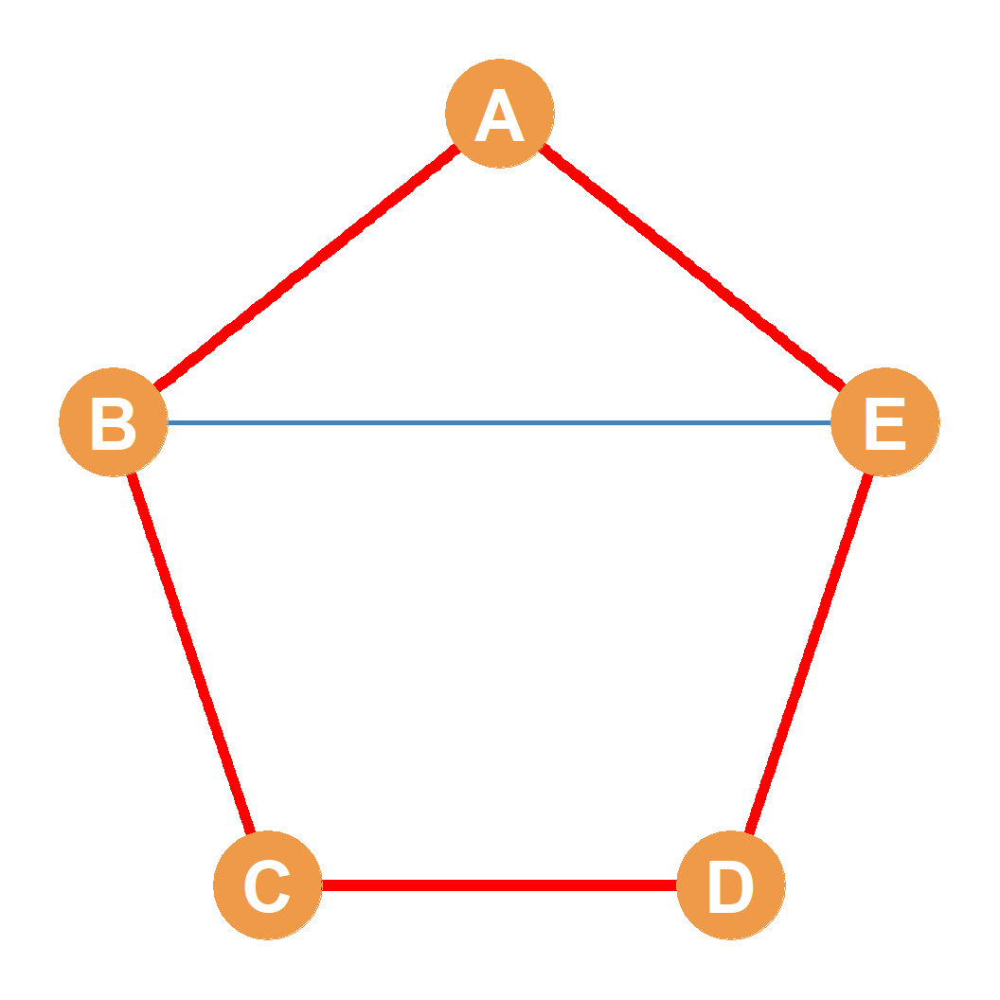
Walks, Trails, and Paths
- Walk: Any sequence of alternating nodes and edges connecting \(u\) to \(v\).
- No restrictions: Nodes and edges can be repeated as much as you want!
- e.g., \(\{B \rightarrow E \rightarrow C \rightarrow E \rightarrow D\}\) (traverses \(E\) and edge \(E-C\) twice).
- Trail: A walk that does not repeat any edges.
- Repeated nodes are allowed, but every edge in the sequence must be unique.
- e.g., \(\{A \rightarrow C \rightarrow D \rightarrow E \rightarrow C \rightarrow B\}\) (repeats node \(C\) but all edges are unique).
- Path: A walk that does not repeat any nodes (which means edges cannot be repeated either).
- The Nested Hierarchy: All paths are trails, and all trails are walks, but the reverse is not true: \[Paths \subset Trails \subset Walks\]
Walks: A Visual Example
- Walk (B-E-C-E-D):
- We start at node \(B\), walk to \(E\), then \(C\), then back to \(E\), and finally to \(D\).
- Repeated Node: Node \(E\) is visited twice in this sequence.
- Repeated Edge: Edge \(E-C\) (and \(C-E\)) is traversed twice.
- Highlighted in red on the right.
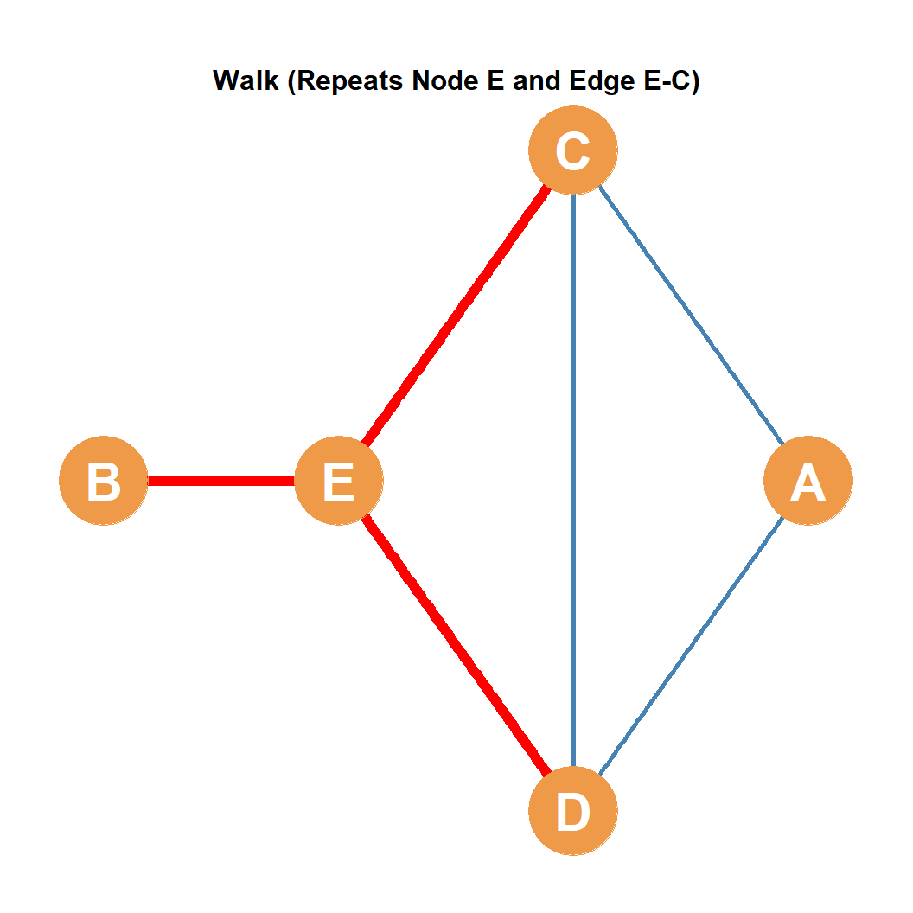
Trails: A Visual Example
- Trail (B-E-C-D-E-A):
- We start at \(B \rightarrow E \rightarrow C \rightarrow D \rightarrow E \rightarrow A\).
- Repeated Node: Node \(E\) is visited twice.
- Repeated Edges: None! Every edge in the sequence is completely unique.
- Highlighted in red on the right.
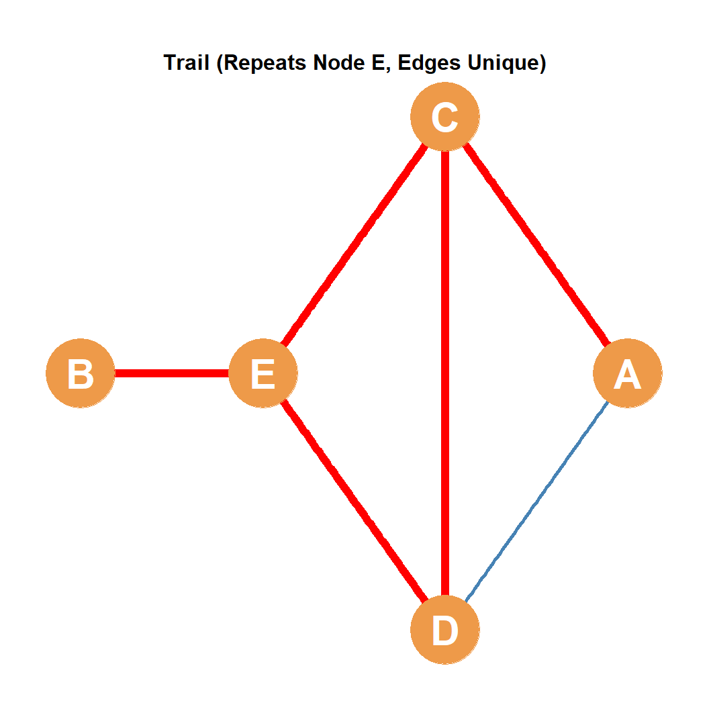
Paths in Directed Graphs (Digraphs)
- In directed graphs, paths must strictly respect the direction of the arrows!
- Let’s trace directed paths from \(A\) to \(B\) in our digraph:
- \(P_1 = \{AC, CE, EB\} \quad (l = 3)\)
- \(P_2 = \{AD, DE, EB\} \quad (l = 3)\)
- \(P_3 = \{AC, CD, DE, EB\} \quad (l = 4)\)
- But can we find any directed path from \(B\) to \(A\)?
- No! All arrows lead away from \(A\) and toward \(B\).
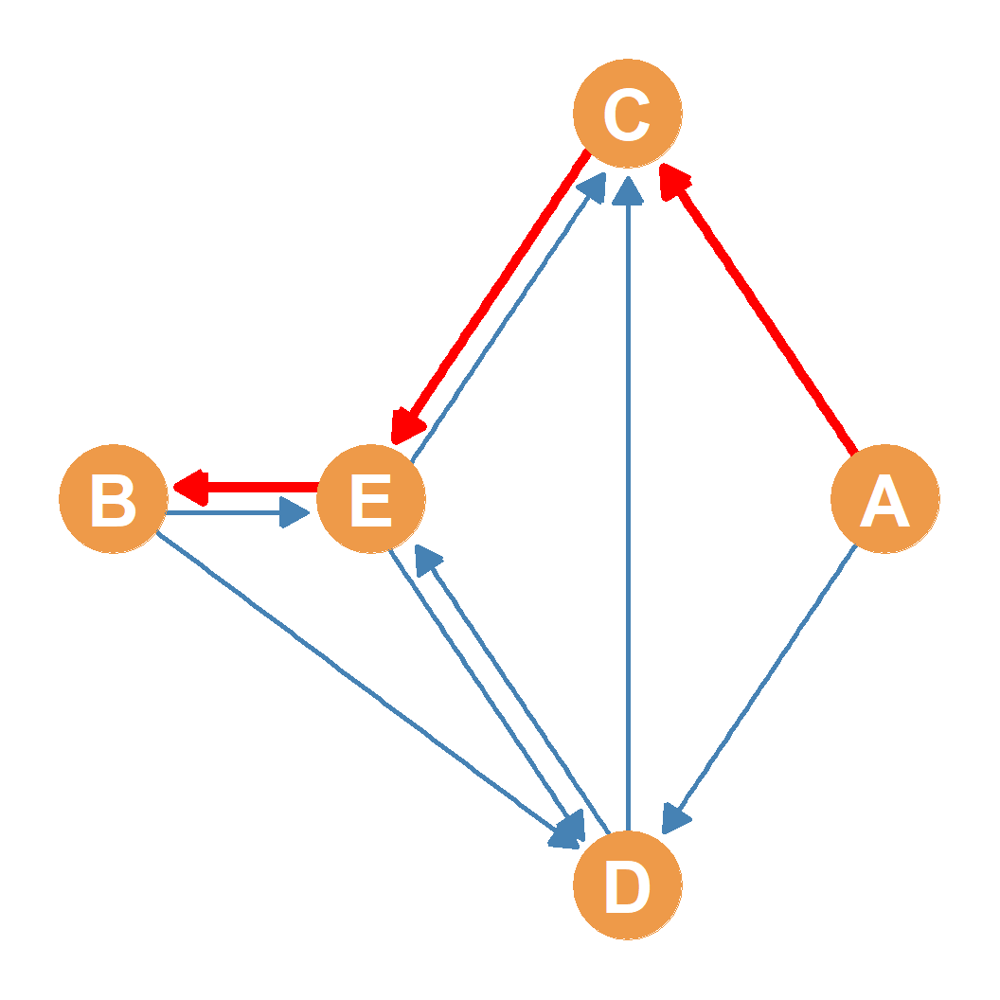
Directed Reachability
- Asymmetric Reachability:
- Node \(A\) can reach \(B\) via directed path \(\{AD, DE, EB\}\) (\(l_{AB} = 3\)).
- But node \(B\) cannot reach \(A\) because we cannot travel against the arrows (\(l_{BA} = \infty\)).
- Mutual Reachability:
- Two nodes \(u\) and \(v\) are mutually reachable if there exists a directed path from \(u \rightarrow v\) AND from \(v \rightarrow u\).
- These two paths do not have to be the same length!
- Example: Nodes \(B\) and \(C\) are mutually reachable:
- \(B\) reaches \(C\) via \(\{BE, ED, DC\} \quad (l = 3)\)
- \(C\) reaches \(B\) via shortest path \(\{CE, EB\} \quad (l = 2)\)
Directed Reachability: Visual Examples
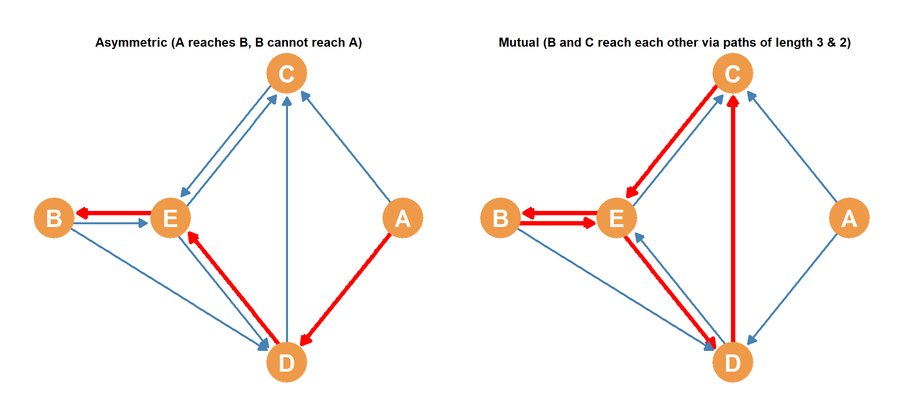
Directed Cycles & DAGs
- A directed cycle is a cycle where all arrows flow in a single, continuous direction.
- Example: Cycle starting and ending at \(C\):
- \(\{CE, ED, DC\} \quad (l = 3)\)
- Example: Cycle starting and ending at \(C\):
- Directed Acyclic Graphs (DAGs):
- Directed graphs that contain no directed cycles.
- e.g. strict organizational command structures, directed trees.
- Anti-symmetric relations (like “is boss of”) structurally forbid cycles to maintain consistent hierarchy.
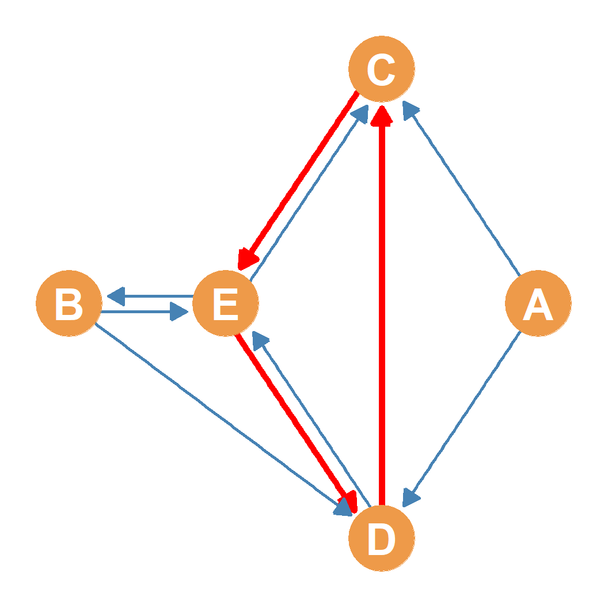
Ignoring the Arrows: Semipaths
- What if we want to trace connections in a directed graph but ignore the arrows?
- This is called a semipath (or semicycle if it is a closed loop).
- A semipath treats directed arcs as undirected edges.
- Example: Semipath connecting \(B\) and \(A\):
- \(\{BE, EC, CA\}\) (highlighted in red on the right).
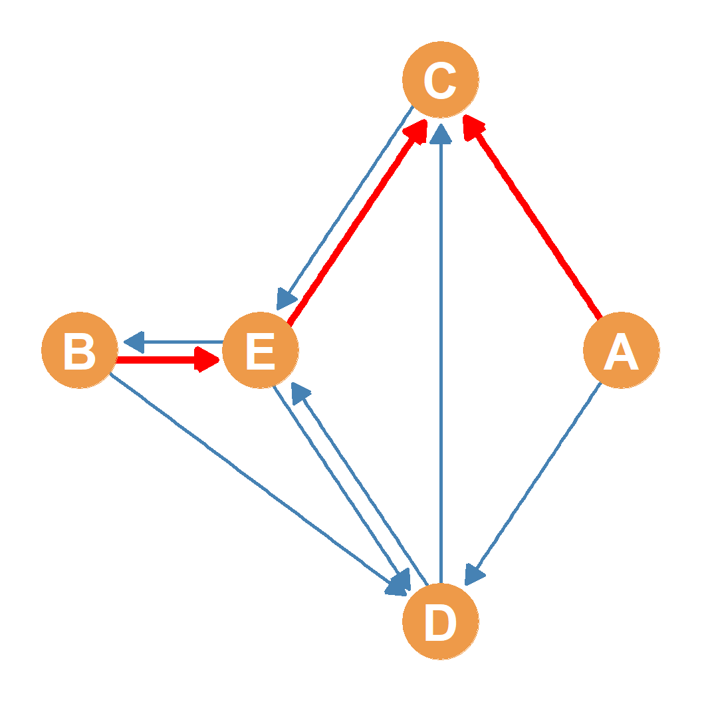
Part 3: Graph Connectivity & Components
Connected vs. Disconnected Graphs
Connected Graph (Single Component)
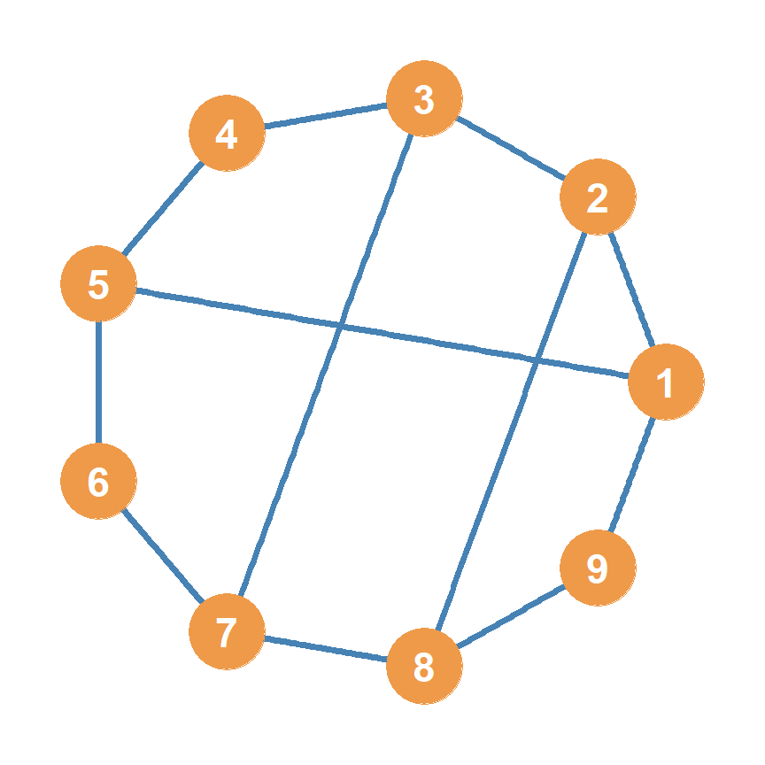
Disconnected Graph (Two Components)

- Connected: A path of some finite length exists between every pair of nodes in the graph (left).
- Disconnected: At least one pair of nodes is unreachable; the graph is split into separate pieces (right).
Components & The Giant Component
Disconnected Graph with 2 Components
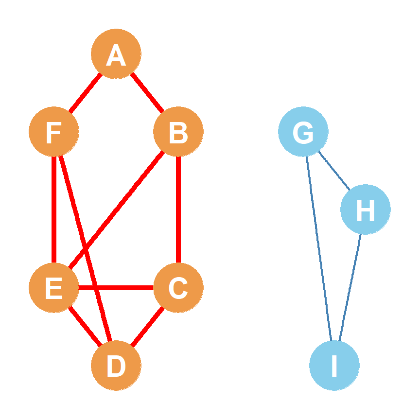
- Component: A maximally connected subgraph within a larger disconnected graph.
- The graph on the left contains exactly two components.
- Giant Component: The largest connected component in a disconnected graph.
- The red component \(\{A, B, C, D, E, F\}\) is the giant component (of order 6).
- The blue component \(\{G, H, I\}\) is a smaller component (of order 3).
Part 4: Edge and Node Connectivity (Cutsets & Bridges)
Edge Cutsets & Connectivity
- We can disconnect a connected graph by removing a subset of its edges.
- Edge Cutset:
- Any set of edges whose removal disconnects the graph into two or more components.
- Minimum Edge Cutset:
- An edge cutset containing the minimum possible number of edges needed to disconnect the graph.
- Edge-Connectivity (\(\lambda(G)\)):
- The number of edges in a minimum edge cutset.
- Bridge:
- A single edge whose removal disconnects the graph (a minimum edge cutset of size 1, so \(\lambda(G) = 1\)).
Edge Cutsets: A Visual Example
- In our 5-node graph on the right:
- Edges A-C and B-C are highlighted in red (Before).
- Removing both edges:
- Disconnects \(\{C, D, E\}\) from \(\{A, B\}\) (After).
- This is an edge cutset of size 2.

Bridges: A Cutset of Size 1
- Bridge:
- A single edge whose removal disconnects the graph (so \(\lambda(G) = 1\)).
- In our graph on the right, the edge C-D is highlighted in red.
- Removing edge C-D completely disconnects \(\{A, B, C\}\) from \(\{D, E\}\).
- Bridges represent the most critical, yet vulnerable transmission links in any network.
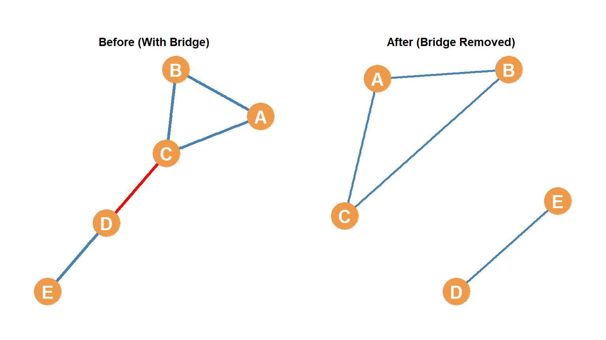
Special Properties of Bridges
- In a connected graph, a bridge (such as the red C-D edge on the right) possesses two interesting mathematical properties (Buckley and Harary 1990):
- 1. The No-Cycle Rule:
- A bridge never lies on any cycle of the graph.
- If it did, removing it would still leave the rest of the cycle intact, failing to disconnect the graph.
- 2. The Intermediation Bottleneck:
- The bridge is an edge on every path connecting at least one pair of nodes (e.g., any node in \(\{A, B, C\}\) to any node in \(\{D, E\}\)).
- Every packet of information flowing between these clusters must pass through this single bottleneck.
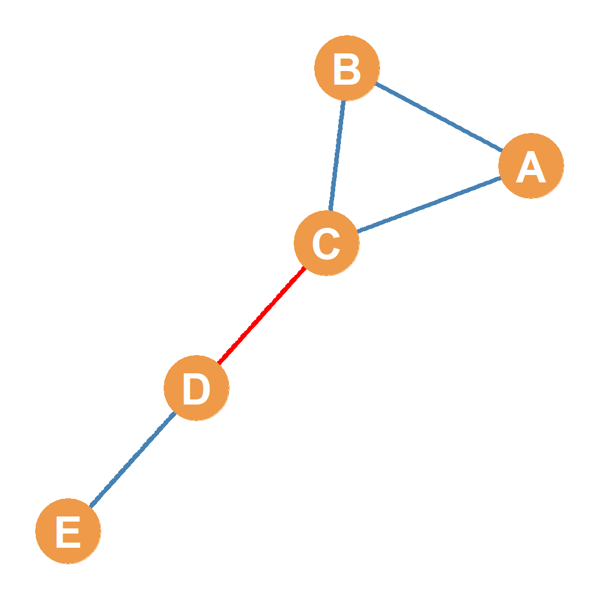
Local Bridges
- In a classic paper on “The Strength of Weak Ties” (1973), Mark Granovetter developed the concept of a local bridge:
- An edge that, if removed, does not disconnect the entire graph, but significantly increases the shortest path length between its end nodes.
- Sociological Power:
- Local bridges act as crucial “shortcuts” that facilitate efficient, cross-group communication.
- They are the primary channels through which novel information diffuses between separate social clusters.
Local Bridge: A Visual Example
- Let’s look at the edge C-D highlighted in red:
- It connects the left cluster \(\{A, B, C\}\) to the right cluster \(\{D, E, F\}\).
- Is it a bridge? No. If removed, the graph remains connected via the bottom path (\(B-G-H-I-E\)).
- Is it a local bridge? Yes!
- Observed distance: \(d(C, D) = 1\).
- If removed, the distance increases to: \[d(C, D) = 5 \quad (C-B-G-H-I-E-D)\]

Node Cutsets & Connectivity
- We can also disconnect a graph by removing nodes (vertices).
- Removing a node also removes all edges incident to it—nodes “take their links with them”!
- Node Cutset (Vertex Cutset):
- Any set of nodes whose removal disconnects the remaining graph into two or more components.
- Minimum Node Cutset:
- A node cutset containing the minimum possible number of nodes needed to disconnect the graph.
- Node-Connectivity (\(\kappa(G)\)):
- The number of nodes in a minimum node cutset.
- Articulation Node (Cutpoint):
- A single node whose removal disconnects the graph (so \(\kappa(G) = 1\)).
Articulation Nodes: A Visual Example
- In our house graph on the right, node E is highlighted in red.
- Removing node E:
- Removes all of its incident edges: \(B-E, E-C, E-D\).
- Completely disconnects node \(B\) from the rest of the network.
- This is a node cutset of size 1 (Node \(E\) is an articulation node).
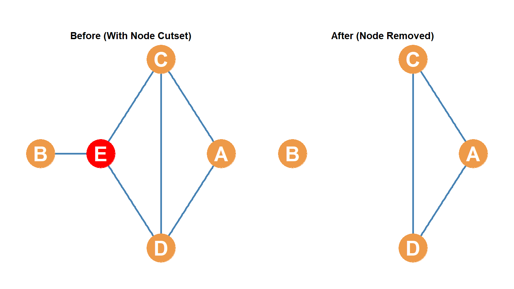
Special Properties of Articulation Nodes
- An articulation node (or cutpoint, such as E on the right) has unique properties mirroring those of bridges:
- 1. Node Equivalent of a Bridge:
- A single actor upon whom the entire connectivity of the network depends (\(\kappa(G) = 1\)).
- 2. The Path Intermediator:
- It stands as an inner node on every single path connecting some node \(v\) to the rest of the network (e.g., node \(E\) is on every path connecting \(B\) to \(\{A, C, D\}\)).
- 3. The End-Node Rule:
- A node of degree \(1\) (an end-node, like \(B\)) can never be an articulation node; removing it always leaves the remaining graph connected.
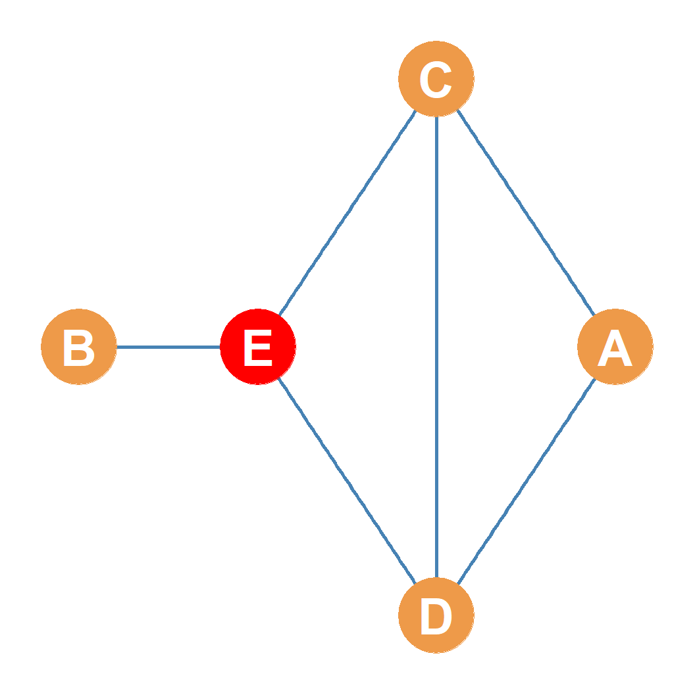
Node Cutset: An Edge Cutset Comparison
- Let’s look at node \(A\) in our house graph on the right.
- To disconnect \(A\) by removing edges, we must remove 2 edges: \(C-A\) and \(D-A\) (red).
- But to disconnect \(A\) by removing nodes, we only need to remove 1 node: \(E\) (the cutpoint that isolates \(B\)).
- This illustrates how node and edge connectivity can differ in the same graph.

k-Connected Graphs & Robustness
- \(k\)-Connected Graph:
- A graph is \(k\)-connected (or \(k\)-node connected) if the minimum number of nodes required to disconnect it is \(k\).
- 1-Connected: Removing 1 node disconnects the graph (contains an articulation point).
- 2-Connected: Requires removing at least 2 nodes to disconnect it.
- 3-Connected: Requires removing at least 3 nodes to disconnect it.
- Menger’s Theorem (1927):
- If a graph is \(k\)-connected, there are at least \(k\) node-independent paths (paths that do not share any common inner nodes) connecting each non-adjacent pair of vertices.
- Social Cohesion: Higher \(k\)-connectivity indicates a more robust, cohesive, and redundant communication structure.
1-Connectivity: A Visual Example
- 1-Connected Graph:
- A graph where removing exactly 1 node can disconnect the network.
- Before (Left):
- A 7-node symmetric bow-tie graph, with the central bridge node (node 7) highlighted in red.
- After (Right):
- The central node 7 is removed, leaving two completely separate connected components (triangles).
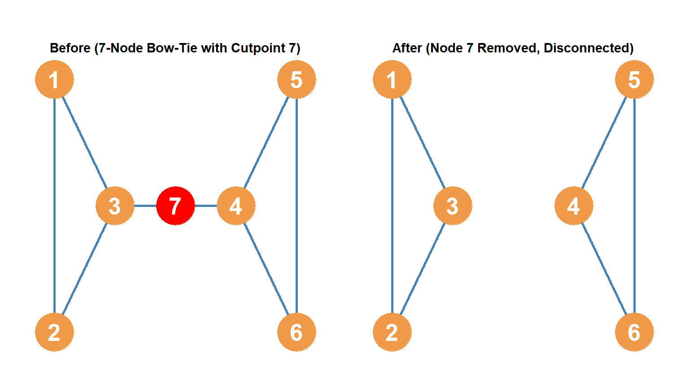
2-Connectivity: A Visual Example
- 2-Connected Graph:
- A graph where it requires removing at least 2 nodes to disconnect it.
- Before (Left):
- A 6-node cycle with a diagonal chord (edge 2-5), with nodes 2 and 5 highlighted in red.
- After (Right):
- Removing nodes 2 and 5 leaves the graph split into two disconnected components: {1, 6} and {3, 4}.
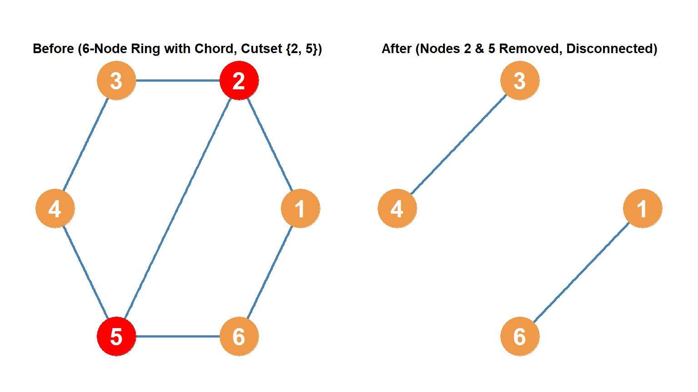
3-Connectivity: A Visual Example
- 3-Connected Graph:
- A graph where it requires removing at least 3 nodes to disconnect it.
- Before (Left):
- A 3-regular 6-node prism graph (two concentric triangles), with nodes 1, 2, and 6 highlighted in red.
- After (Right):
- Removing nodes 1, 2, and 6 leaves the single edge 4-5 and completely isolates node 3 (disconnected).
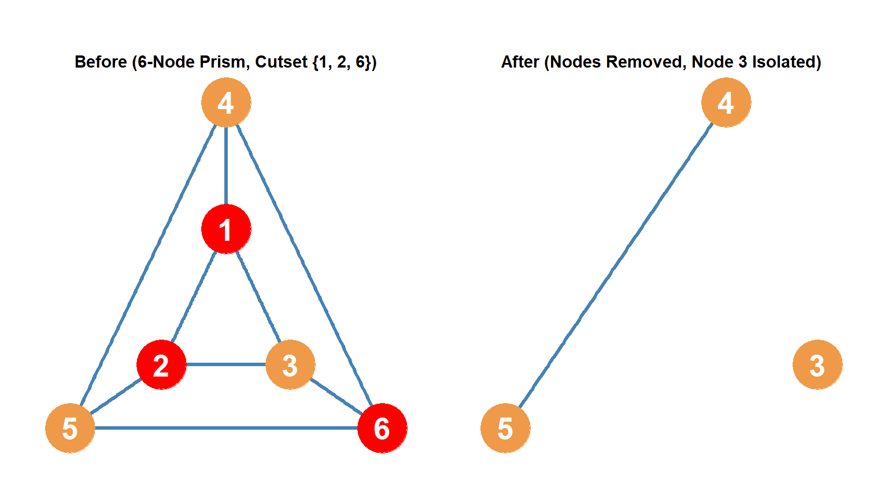
Graph Cutsets: Quantitative Cohesion
- Cohesion can be directly translated to graph-theoretic cutsets:
- Cohesive Groups: Have large edge-cutsets and node-cutsets. Many connections or individuals must be removed to disrupt or fragment the group.
- Fragmented Groups: Have small cutsets (such as bridges or single cutpoints). They are vulnerable to rapid disruption if key facilitators are removed.
- Any network can be decomposed into hierarchical subgraphs with specific levels of \(k\)-connectivity.
The Connectivity Inequality
- For any undirected graph \(G\), node-connectivity (\(\kappa\)), edge-connectivity (\(\lambda\)), and minimum degree (\(\delta\)) obey a fundamental structural hierarchy: \[\kappa(G) \le \lambda(G) \le \delta(G)\]
- A Strict Inequality Example (\(1 < 2 < 3\)):
- In our 9-node “double-clique” graph on the right:
- Minimum Degree (\(\delta = 3\)): The least connected nodes (\(3, 4, 7, 8\)) have exactly 3 edges.
- Edge-Connectivity (\(\lambda = 2\)): Removing \(\{1-9, 2-9\}\) separates the left clique from the waist. No single bridge exists.
- Node-Connectivity (\(\kappa = 1\)): Removing the central cutpoint (node 9) completely disconnects the graph.
- In our 9-node “double-clique” graph on the right:

Part 5: Directed Connectivity & Components
Pairwise Connectivity in Directed Graphs
- Before we can define whether a whole graph has a certain flavor of connectivity, we must define the connectivity state of individual pairs of nodes (pairwise connectivity).
- Two nodes \(u\) and \(v\) can be connected in four distinct pairwise flavors depending on the directed pathways between them:
- Pairwise Weakly Connected
- Pairwise Unilaterally Connected
- Pairwise Strongly Connected
- Pairwise Recursively Connected
- Let’s examine these four pairwise states step-by-step.
1. Pairwise Weak & Unilateral Connectivity
- Pairwise Weakly Connected:
- Node \(u\) and \(v\) are connected by at least one semipath (connected if we ignore the arrow directions).
- Sociological Meaning: They are part of the same general network, but there is no directed path starting from either node that can reach the other.
- Pairwise Unilaterally Connected:
- A directed path exists from \(u \rightarrow v\) OR from \(v \rightarrow u\) (one-way reachability).
- Sociological Meaning: Information or influence can flow from one person to the other, but not in both directions (no mutual exchange).
2. Pairwise Strong & Recursive Connectivity
- Pairwise Strongly Connected:
- A directed path exists from \(u \rightarrow v\) AND from \(v \rightarrow u\) (mutual reachability).
- Sociological Meaning: Both nodes can reach each other, but the paths in each direction may use completely different intermediate nodes or channels.
- Pairwise Recursively Connected:
- A directed path exists from \(u \rightarrow v\) and \(v \rightarrow u\), AND the directed path in both directions shares the exact same set of intermediate nodes (sharing both vertices and edges).
- Sociological Meaning: The relationship can be traversed back-and-forth along the same closed, mutually symmetric cycle.
Node-Level Pairwise vs. Graph-Level Connectivity
- A whole graph’s flavor of connectivity is defined by the weakest pairwise connectivity state present in the network:
| Whole Graph State | Defining Pairwise Condition |
|---|---|
| Strongly Connected | every pair of nodes in the graph is pairwise strongly connected. |
| Unilaterally Connected | at least one pair of nodes in the graph is pairwise unilaterally connected. |
| Weakly Connected | at least one pair of nodes in the graph is pairwise weakly connected. |
. . .
- Takeaway: Global graph connectivity is built on top of these individual node-to-node pairwise states. If even a single pair drops to a lower state, the entire graph’s connectivity level drops!
Strongly Connected: A Visual Example
- Strong Connectivity:
- A directed graph is strongly connected if there is a directed path from every node to every other node (mutual reachability).
- 7-Node Example (Right):
- Consists of a complete spanning cycle (\(A \rightarrow B \rightarrow C \rightarrow D \rightarrow E \rightarrow F \rightarrow G \rightarrow A\)) plus chord arcs.
- Because of the continuous cycle, any node can reach any other node, ensuring complete mutual reachability.
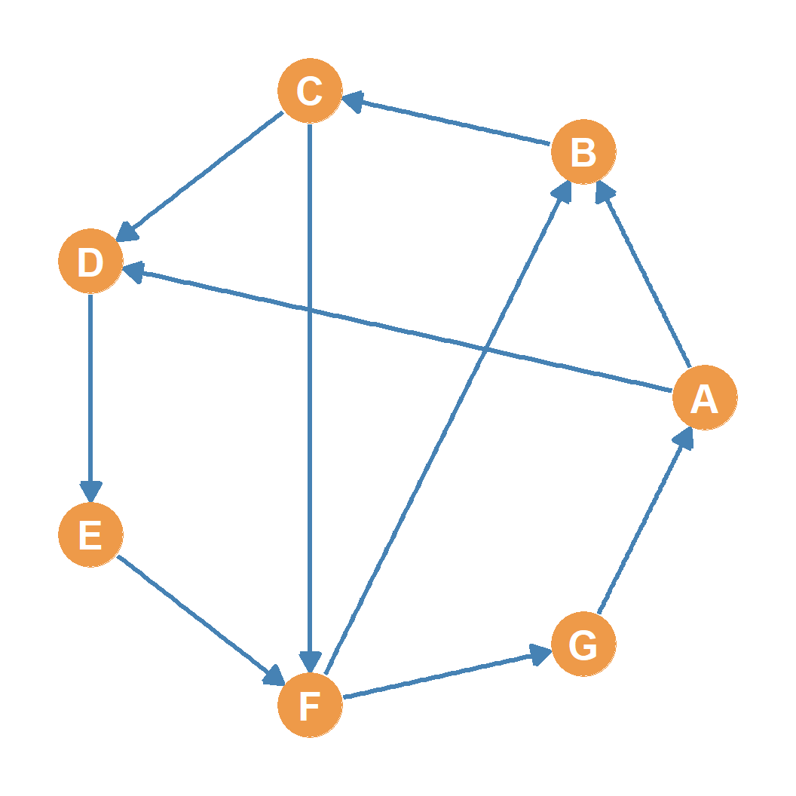
Unilaterally Connected: A Visual Example
- Unilateral Connectivity:
- A directed graph is unilaterally connected if for every pair of nodes, there is at least one directed path connecting them.
- 7-Node Example (Right):
- Same 7 nodes, but the feedback edge \(G \rightarrow A\) and other backward chords are removed. Edges flow strictly forward (\(A \rightarrow B \rightarrow C \dots \rightarrow G\)).
- Here, \(A\) can reach \(G\), but \(G\) cannot reach \(A\) (no mutual reachability).
- However, for every single pair, at least one directed pathway exists.
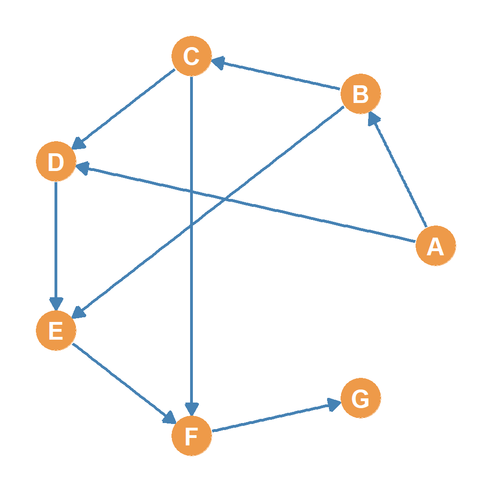
Weakly Connected: A Visual Example
- Weak Connectivity:
- A directed graph that is connected only if we ignore the direction of the arrowheads (treating it like an undirected graph).
- 7-Node Example (Right):
- Uses our textbook’s 7-node directed graph.
- Nodes \(E\) and \(G\) are transmitter nodes (indegree 0) that cannot reach each other, nor can they be reached by anyone else.
- Thus, \(\{E, G\}\) is a mutually unreachable pair (violating unilateral connectivity).

Decomposing Directed Components
- Like undirected graphs, directed graphs can be decomposed into:
- Weakly Connected Components (WCCs):
- Subgraphs connected when ignoring edge directions.
- Yields one WCC containing all 7 nodes: \(\{A, B, C, D, E, F, G\}\).
- Strongly Connected Components (SCCs):
- Subgraphs where every pair is mutually reachable.
- Yields four SCCs:
- \(\{A, B, D, F\}\) (the core “rumor mill”, highlighted in red).
- Singletons: \(\{C\}\), \(\{E\}\), \(\{G\}\).
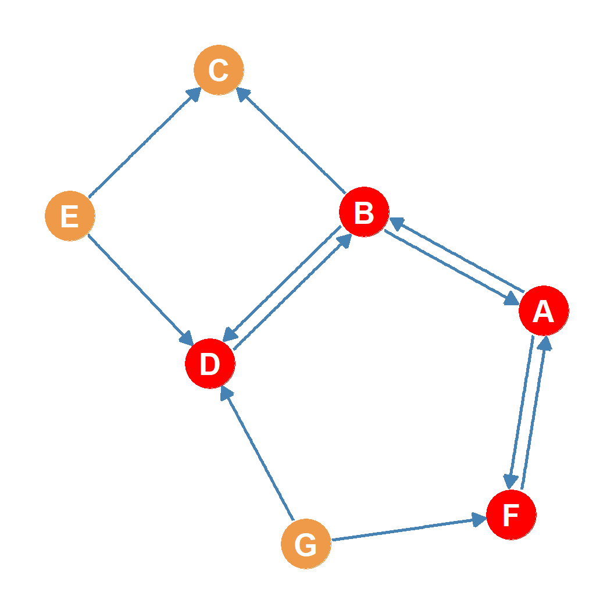
Part 6: Tree Graphs & Forests
What is a Tree Graph?
- If a graph is both connected and has no cycles (acyclic), then it is a tree graph.
- The Cycle Restriction:
- A cycle is a path that begins and ends with the same node.
- In a tree graph, you can never start with a node and trace a sequence of distinct edges that take you back to where you started!
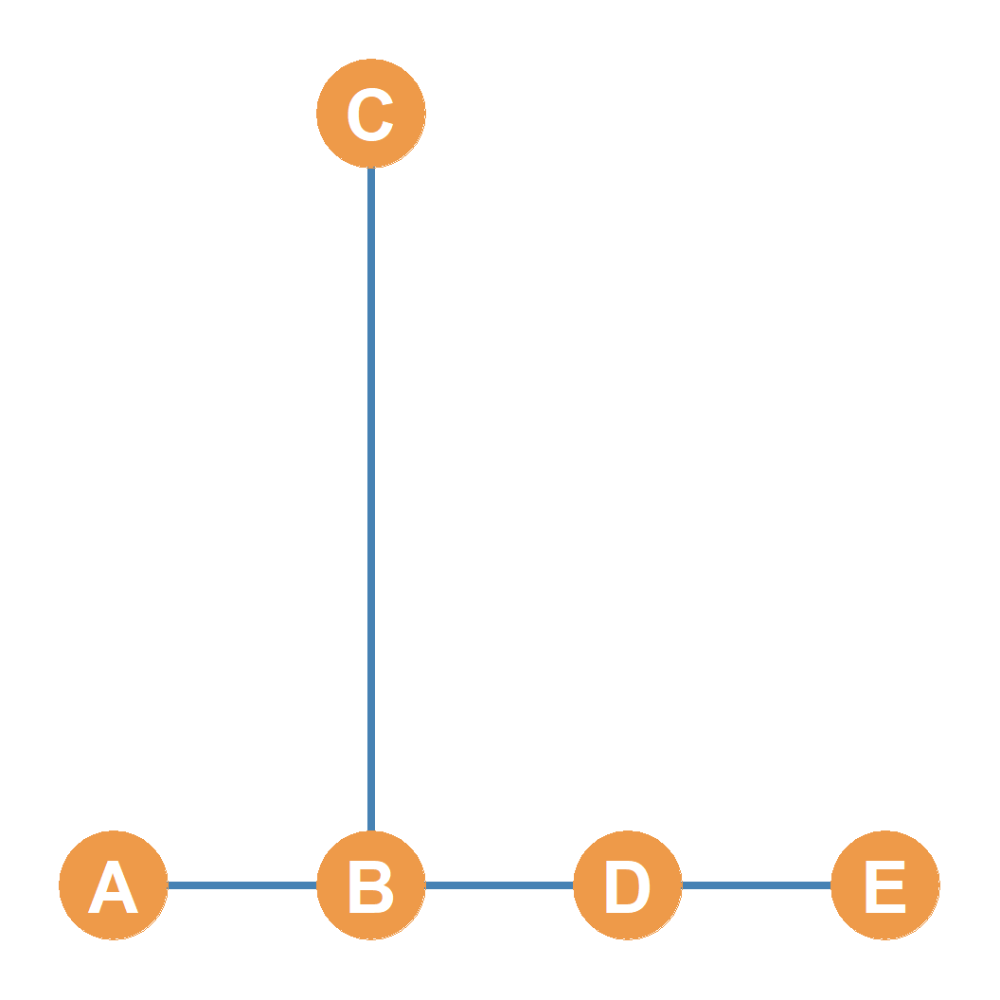
Properties of Tree Graphs
- Tree graphs possess several unique mathematical and structural properties:
- The Single Path Property:
- Every pair of nodes in a tree graph is linked by exactly one unique path.
- There are no redundant or alternative paths between any two actors.
- The One-Cycle Property:
- Adding a single new edge connecting any pair of non-adjacent nodes always creates exactly one cycle, destroying its tree status.
- The Single Path Property:
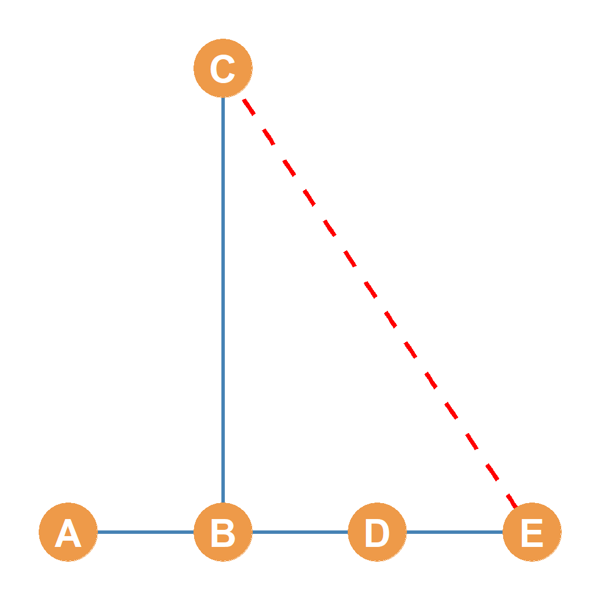
Tree Graph Metrics: Vertices & Edges
- In any tree graph, the number of edges (\(m\)) is always exactly equal to the number of nodes (\(n\)) minus one: \[m = n - 1 \qquad \iff \qquad n = m + 1\]
- Sum of Degrees Identity:
- Recall that the sum of degrees in any undirected graph is \(2m\).
- Substituting \(m = n - 1\), the sum of degrees of a tree graph is always: \[\sum_i k_i = 2(n - 1) = 2n - 2\]
- In a tree graph, the sum of degrees is always exactly twice the number of nodes minus two!
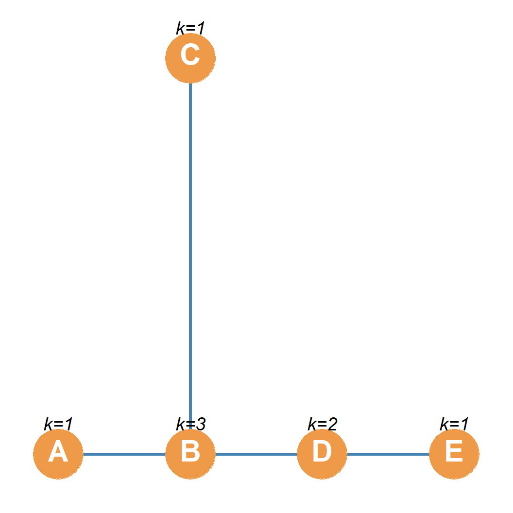
Tree Graph Density
- Because of the strict \(m = n - 1\) edge constraint, tree graph density simplifies beautifully.
- Density of a Tree Graph: \[d(T) = \frac{2m}{n(n-1)} = \frac{2(n-1)}{n(n-1)} = \frac{2}{n}\]
- For our 5-node tree graph on the right (\(n = 5\)):
- The density is: \[d(T) = \frac{2}{5} = 0.40 \quad (40\%)\]

Tree Graph Average Degree
- Average degree in a tree graph also simplifies beautifully due to the edge constraint.
- Average Degree of a Tree Graph: \[\bar{k} = \frac{\sum k_i}{n} = \frac{2m}{n} = \frac{2n - 2}{n}\]
- For our 5-node tree graph on the right (\(n = 5\)):
- The average degree is: \[\bar{k} = \frac{2(5) - 2}{5} = \frac{8}{5} = 1.6\]
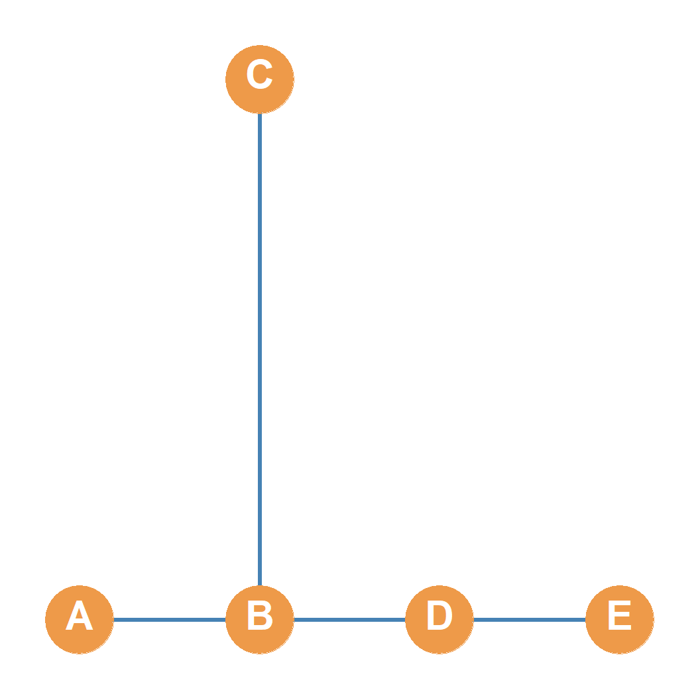
Trees as Minimally Connected Graphs
- Trees are minimally connected graphs:
- They are connected using the smallest possible number of edges needed to connect \(n\) vertices.
- The Bridges Rule:
- Removing even a single edge from a tree graph completely disconnects the graph.
- Thus, every edge of a tree graph is a bridge (a minimum edge cutset of size 1)!
- Disconnecting a tree graph by removing any edge splits it into separate connected components, which are themselves trees.
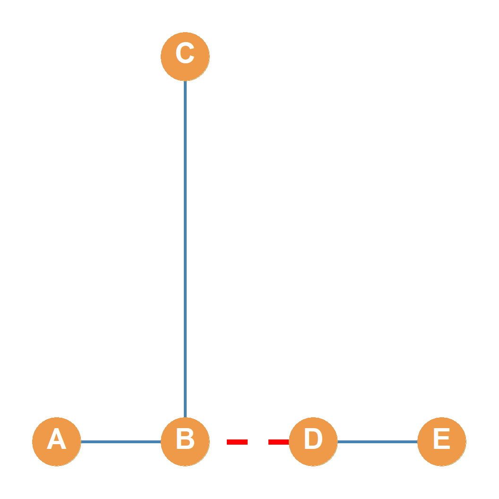
Numerical Example: 8-Node Tree
Let’s compute the metrics for the 8-node tree shown on the right:
- 1. Nodes and Edges:
- Number of nodes: \(n = 8\)
- Number of edges: \(m = n - 1 = 7\)
- 2. Degree of each node:
- \(k_A = 2, k_B = 3, k_C = 3, k_D = 1, k_E = 2, k_F = 1, k_G = 1, k_H = 1\)
- Sum of degrees: \(\sum k_i = 14\)
- Check: \(2(n-1) = 2(7) = 14 \quad \checkmark\)
- 3. Network Density:
- \(d(T) = \frac{2}{n} = \frac{2}{8} = 0.25 \quad (25\%)\)
- 4. Average Degree:
- \(\bar{k} = \frac{2n - 2}{n} = \frac{14}{8} = 1.75\)
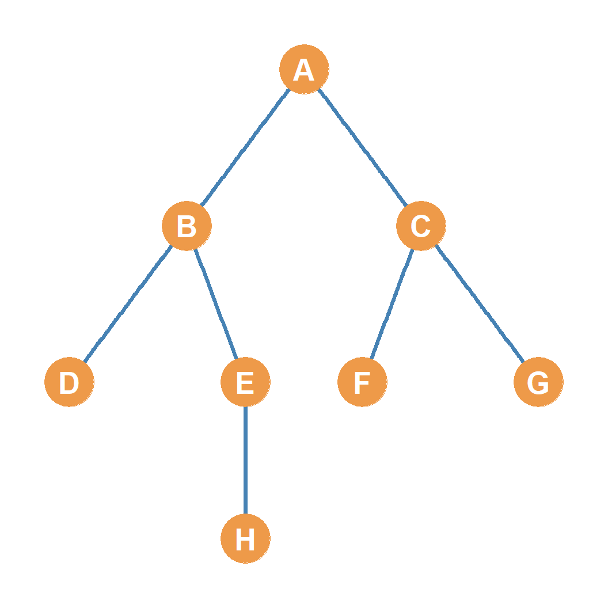
Forests: Visualizing Disconnection
- Forest:
- A disconnected graph whose components are all tree graphs.
- Before (Left):
- A connected 9-node tree graph.
- After (Right):
- Removing edge D-H splits the graph into two separate trees (a forest):
- A bigger tree of 6 nodes on the left (\(\{A, B, C, D, E, F\}\)).
- A smaller tree of 3 nodes on the right (\(\{G, H, I\}\)).
- Removing edge D-H splits the graph into two separate trees (a forest):
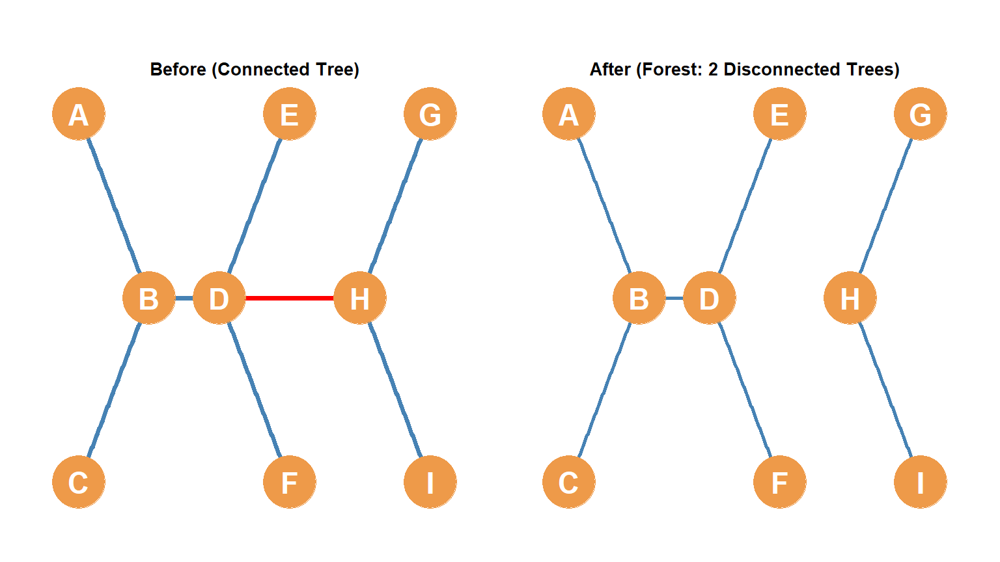
Special Types of Trees: Line, Star & Caterpillar Graphs
- The Line Graph (\(L_n\)):
- A single straight path connecting \(n\) nodes.
- Used to model sequential diffusion processes (like the “Telephone Game”).
- The Star Graph (\(S_n\)):
- A central hub connected to \(n-1\) leaf nodes.
- Represents extreme structural centralization.
- The Caterpillar Graph:
- A central path (“body”) with pendant leaf nodes (“legs”) sticking out of it.
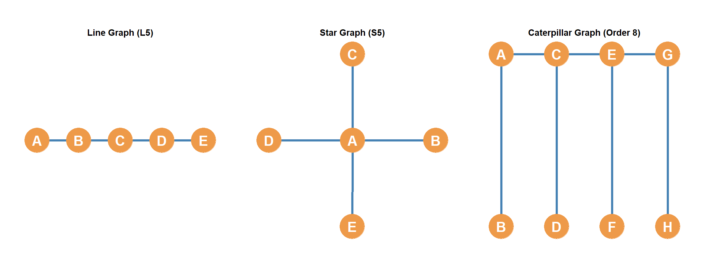
The Graph Efficiency
- Concept (Krackhardt, 1994):
- Measures how economical the connectivity of a graph is.
- A graph is efficiently connected if it uses the minimum possible number of edges to remain connected.
- Formula: \[F(G) = 1 - \left[\frac{2(m - n + 1)}{(n-1)(n-2)}\right]\]
- Where \(m\) is the number of edges and \(n\) is the number of nodes.
- Numerical Proof (The Tree on the Right):
- Pictured on the right is a tree of \(n = 5\) nodes and \(m = 4\) edges.
- Substituting \(n = 5\) and \(m = 4\) into the formula: \[F(G) = 1 - \left[\frac{2(4 - 5 + 1)}{(5-1)(5-2)}\right]\] \[F(G) = 1 - \left[\frac{2(0)}{4 \times 3}\right] = 1 - 0 = 1.0\]
- Beyond Trees (Decreasing Efficiency):
- As edges are added beyond \(m = n - 1\), the numerator \((m - n + 1) > 0\), causing \(F(G)\) to decrease toward \(0.0\).
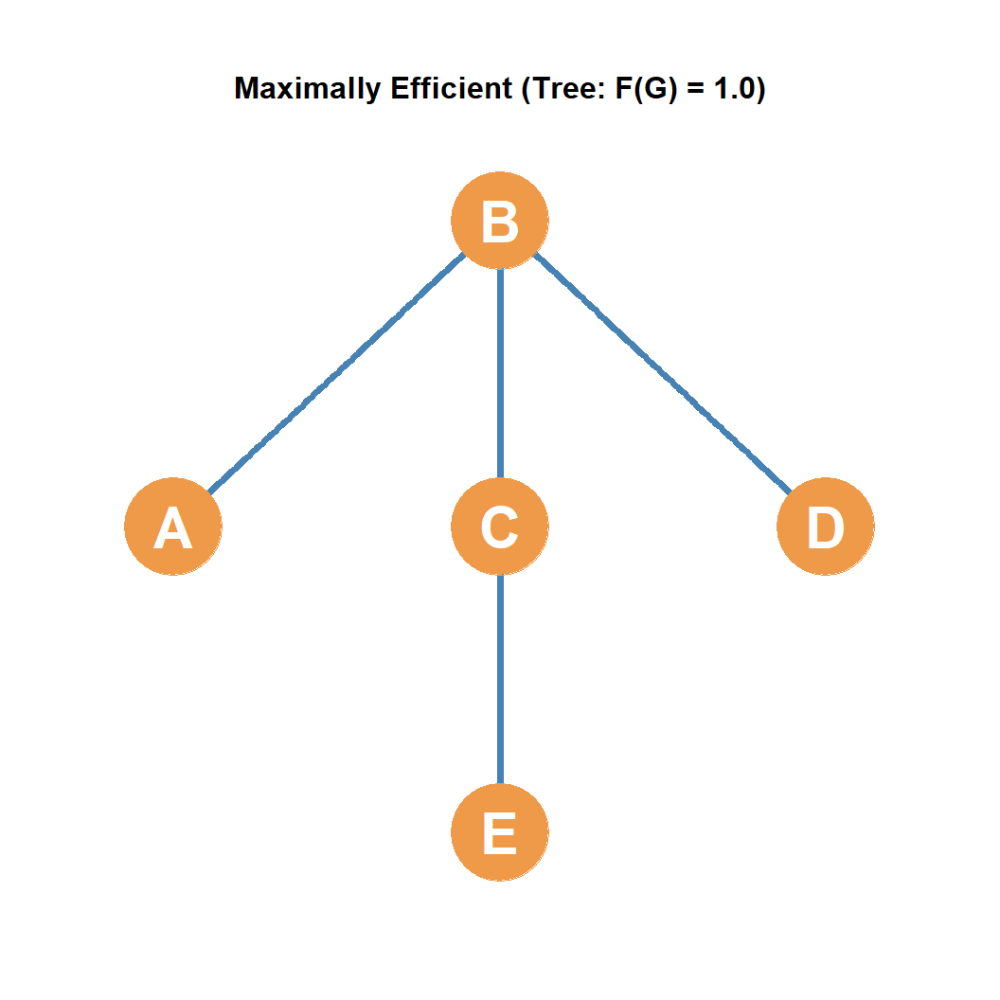
Detailed Example: Graph 1 (Less Efficient)
- Graph 1 Structure:
- Contains \(n = 5\) nodes and \(m = 7\) edges.
- Efficiency Calculation:
- We substitute \(n=5\) and \(m=7\) into the formula: \[F(G) = 1 - \left[\frac{2(7 - 5 + 1)}{(5-1)(5-2)}\right]\] \[F(G) = 1 - \left[\frac{2(3)}{4 \times 3}\right] = 1 - \frac{6}{12} = 0.50\]
- Interpretation:
- With 5 nodes, a connected tree needs only 4 edges.
- This graph has 3 redundant edges (\(7 - 5 + 1 = 3\)), resulting in a low efficiency score of \(0.50\).
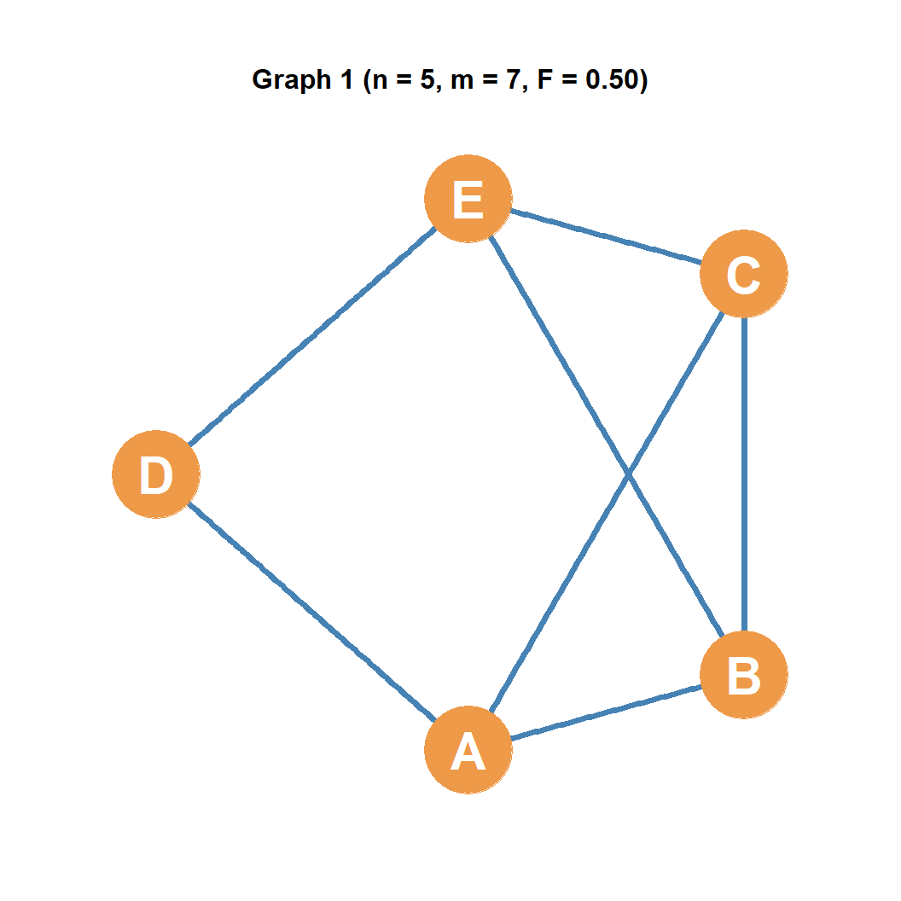
Detailed Example: Graph 2 (More Efficient)
- Graph 2 Structure:
- Contains \(n = 7\) nodes and \(m = 10\) edges.
- Efficiency Calculation:
- We substitute \(n=7\) and \(m=10\) into the formula: \[F(G) = 1 - \left[\frac{2(10 - 7 + 1)}{(7-1)(7-2)}\right]\] \[F(G) = 1 - \left[\frac{2(4)}{6 \times 5}\right] = 1 - \frac{8}{30} \approx 0.73\]
- Conclusion:
- Despite having more edges (\(10\) vs \(7\)), Graph 2 is larger. Its redundancy is distributed over more nodes, yielding a higher efficiency of \(0.73\).
- Graph 2 is more efficient than Graph 1 (\(0.73 > 0.50\)).
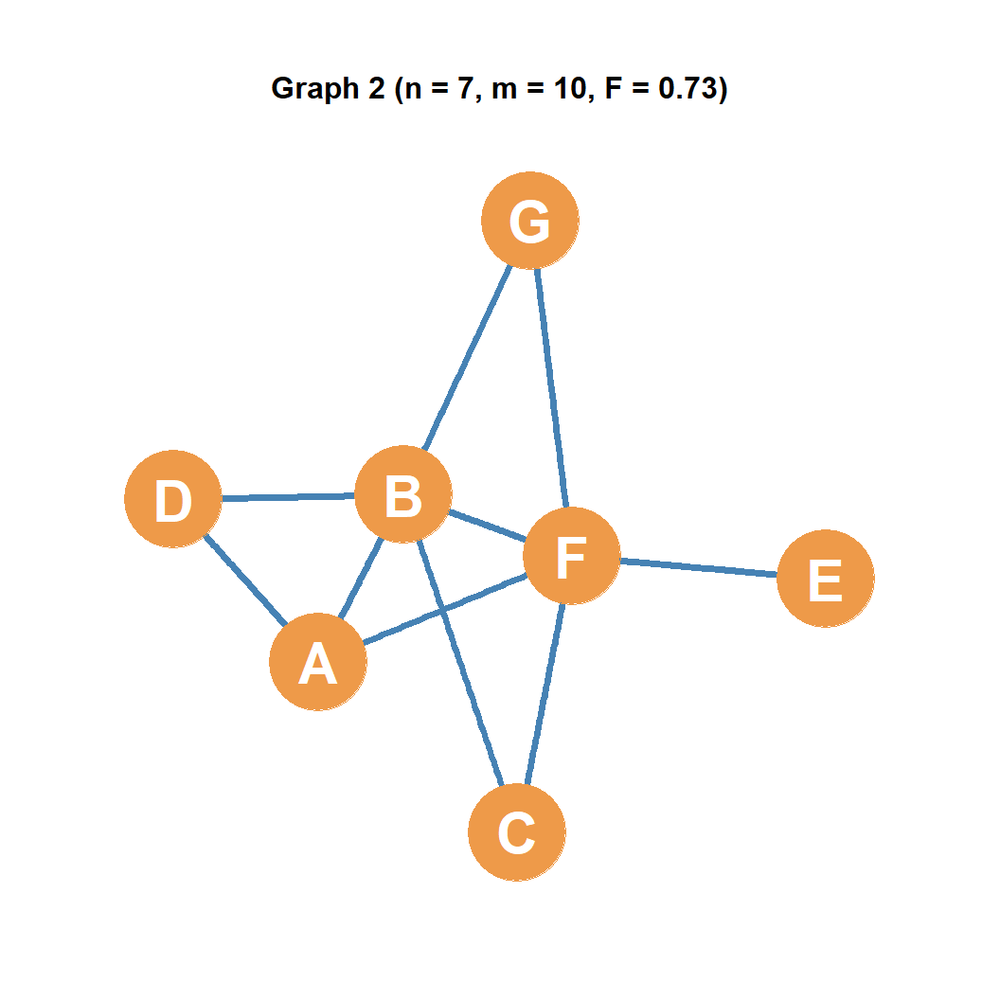
Graph Efficiency: Complete Graphs
- Maximally Inefficient:
- The complete graph (\(K_n\)) is minimally efficient because it has the maximum possible number of edges.
- Number of edges: \(m = \frac{n(n-1)}{2}\)
- Example (\(n=5\) Complete Graph):
- Edges: \(m = \frac{5 \times 4}{2} = 10\)
- Calculation: \[F(G) = 1 - \left[\frac{2(10 - 5 + 1)}{(5-1)(5-2)}\right]\] \[= 1 - \left[\frac{2(6)}{4 \times 3}\right] = 1 - \frac{12}{12} = 0.0\]
- Thus, any complete graph yields \(F(G) = 0.0\).
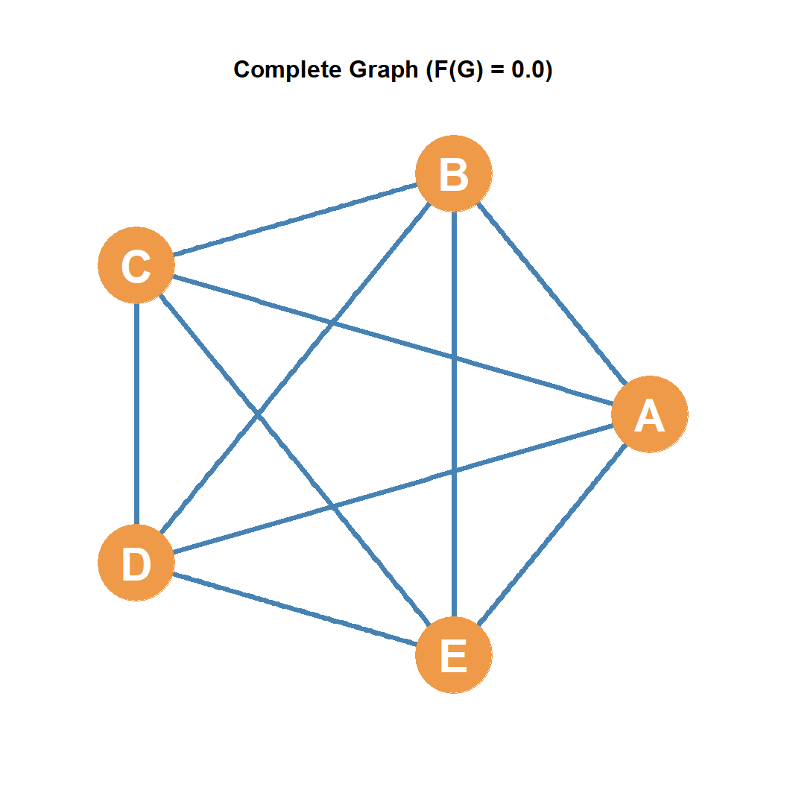